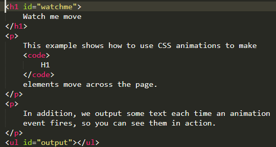

Las animaciones CSS3 permiten animar la transición entre un estilo CSS y otro. Las animaciones constan de dos componentes: un estilo que describe la animación y un conjunto de fotogramas que indican su estado inicial y final, así como posibles puntos intermedios en la misma.
Las animaciones CSS tienen tres ventajas principales sobre las técnicas tradicionales de animación basada en scripts:
Es muy fácil crear animaciones sencillas, puedes hacerlo incluso sin tener conocimientos de Javascript.
Es muy fácil crear animaciones sencillas, puedes hacerlo incluso sin tener conocimientos de Javascript.
La animación se muestra correctamente, incluso en equipos poco potentes. Animaciones simples realizadas en Javascript pueden verse mal (a menos que estén muy bien programadas). El motor de renderizado puede usar técnicas de optimización como el "frame-skipping" u otras para conseguir que la animación se vea tan suave como sea posible.
Al ser el navegador quien controle la secuencia de la animación, permitimos que optimice el rendimiento y eficiencia de la misma, por ejemplo, reduciendo la frecuencia de actualización de la animación ejecutándola en pestañas que no estén visibles.
Para crear una secuencia de animación CSS usaremos la propiedad animation y sus sub-propiedades. Con ellas podemos no solo configurar el ritmo y la duración de la animación sino otros detalles sobre la secuencia de la animación. Con ellas no configuramos la apariencia actual de la animación, para ello disponemos de @keyframes como describiremos más adelante.
Tiempo de retardo entre el momento en que el elemento se carga y el comienzo de la secuencia de la animación.
Indica si la animación debe retroceder hasta el fotograma de inicio al finalizar la secuencia o si debe comenzar desde el principio al llegar al final.
Indica la cantidad de tiempo que la animación consume en completar su ciclo (duración).
El número de veces que se repite. Podemos indicar infinite para repetir la animación indefinidamente.
Especifica el nombre de la regla @keyframes que describe los fotogramas de la animación.
Permite pausar y reanudar la secuencia de la animación.
Indica el ritmo de la animación, es decir, como se muestran los fotogramas de la animación, estableciendo curvas de aceleración.
Especifica qué valores tendrán las propiedades después de finalizar la animación (los de antes de ejecutarla, los del último fotograma de la animación o ambos). Definiendo la secuencia de la animación con fotogramas Una vez configurado el tiempo de la animación, necesitamos definir su apariencia. Esto lo haremos estableciendo dos fotogramas más usando la regla @keyframes.Cada fotograma describe cómo se muestra cada elemento animado en un momento dado durante la secuencia de la animación. Desde que se define el tiempo y el ritmo de la animación, el fotograma usa percentage para indicar en qué momento de la secuencia de la animación tiene lugar. 0% es el principio, 100% es el estado final de la animación. Debemos especificar estos dos momentos para que el navegador sepa dónde debe comenzar y finalizar; debido a su importancias, estos dos momentos tienen alias especiales: from y to. Además puedes, opcionalmente, incluir fotogramas que describan pasos intermedios entre el punto inicial y final de la animación.
Nota: Los siguientes ejemplos no usan ningún prefijo en las propiedades CSS de animación. Los navegadores antiguos pueden necesitarlos. Al hacer click en "Ver el ejemplo vivo" se incluye el prefijo -webkit. Haciendo que un texto se delice por la ventana del navegador.
Este sencillo ejemplo da estilos al elemento para que el texto se deslice por la pantalla entrando desde el borde derecho de la ventana del navegador.
p{
animation-duration: 3s;
animation-name: slidein;
}
@keyframes slidein {
from {
margin-left: 100%;
width: 300%
}
to {
margin-left: 0%;
width: 100%;
}
}
El estilo del elemento especifica, a través de la propiedad animation-duration, que la animación debe durar 3 segundos desde el inicio al fin y que el nombre de los @keyframes que definen los fotogramas de la secuencia de la animación es "slidein". Si queremos añadir algún estilo personalizado sobre el elemento para usarlo en navegadores que no soporten animaciones CSS también podemos incluirlos. En nuestro ejemplo, no queremos ningún otro estilo personalizado diferente al efecto de la animación.
Los fotogramas se definen usando la regla @keyframes. En nuestro ejemplo, tenemos solo dos fotogramas.
El primero de ellos sucede en elt 0% (hemos usado su alias from). Aqui, configuramos el margen izquierdo del elemento, poniendolo al 100% (es decir, en el borde derecho del elemento contenedor), y su ancho al 300% (o tres veces el ancho del elemento contenedor). Esto hace que en el primer fotograma de la animación tengamos el encabezado fuera del borde derecho de la ventana del navegador.
El segundo (y último) fotograma sucede en el 100% (hemos usado su alias to). Hemos puesto el margen derecho al 0% y el ancho del elemento al 100%. Esto produce que el encabezado, al finalizar la animación, esté en el borde derecho del área de contenido.
The Caterpillar and Alice looked at each other for some time in silence: at last the Caterpillar took the hookah out of its mouth, and addressed her in a languid, sleepy voice.Vamos a añadir otro fotograma a la animación de nuestro ejemplo anterior. Pongamos que queremos que el tamaño de fuente del encabezado aumente a medida que se mueve durante un tiempo y que después disminuye hasta su tamaño original. Esto es tan sencillo como añadir este fotograma:
75% {Esto le dice al navegador que en el 75% de la secuencia de la animación, el encabezado tiene un margen izquierdo del 25%, un tamaño de letra del 200% y un ancho del 150%.
Para hacer que la animación se repita, solo hay que usar la propiedad animation-iteration-count e indicarle cuántas veces debe repetirse. En nuestro caso, usamos infinite para que la animación se repita indefinidamente:
p {Hemos hecho que se repita, pero queda un poco raro que salte al inicio de la animación cada vez que ésta comienza. Queremos que se mueva hacia adelante y hacia atrás en la pantalla. Esto lo conseguimos fácilmente indicando que animation-direction es alternate:
p {Podemos tener un control mayor sobre las animaciones (así como información util sobre ellas) haciendo uso de eventos de animación. Dichos eventos, representados por el objeto AnimationEvent , se pueden usar para detectar cuándo comienza la animación, cuándo termina y cuándo comienza una iteración. Cada evento incluye el momento en el que ocurrió, así como el nombre de la animación que lo desencadenó.
Vamos a modificar el ejemplo del texto deslizante para recoger información sobre cada evento cuando suceda y asi podremos echar un vistazo a cómo funcionan.
.slidein {Usaremos un poco de Javascript para escuchar los tres posibles eventos de animación. La función setup() configura nuestros detectores de eventos.La llamaremos nada más cargar la página.
var e = document.getElementById("watchme");
e.addEventListener("animationstart", listener, false);
e.addEventListener("animationend", listener, false);
e.addEventListener("animationiteration", listener, false);
e.className = "slidein";
Es la forma estándar de detectar eventos en Javascript, si quieres conocer más detalles sobre cómo funciona la detección de eventos, consulta la documentación de element.addEventListener().
La última línea de la función setup() pone la clase "slidein" al elemento para comenzar la animación. ¿Por qué?. Porque que el evento animationstart se dispara cuando comienza la animación y, en nuestro caso, esto sucedería antes de que nuestro código se hubiera ejecutado y no podríamos crear los detectores de eventos. Para evitarlo,creamos los detectores de eventos antes y añadimos la clase al elemento para iniciar la animación.
Los eventos, al irse disparando, llamarán a la función listener().
function listener(e) {
var l = document.createElement("li");
switch(e.type) {
case "animationstart":
l.innerHTML = "Iniciado: tiempo transcurrido " + e.elapsedTime;
break;
case "animationend":
l.innerHTML = "Finalizado: tiempo transcurrido " + e.elapsedTime;
break;
case "animationiteration":
l.innerHTML = "Nueva iteración comenzó a los " + e.elapsedTime;break;
}
document.getElementById("output").appendChild(l);
}
Este código también es muy sencillo. Miramos en event.type para saber qué tipo de evento se ha disparado y, en función del tipo de evento, añadimos su correspodiente texto al elemento. que usaremos para registrar la actividad de nuestros eventos.
El resultado, si todo ha ido bien, será algo parecido a esto: Iniciado: tiempo transcurrido 0 Nueva iteración comenzó a los 3.01200008392334 Nueva iteración comenzó a los 6.00600004196167 Finalizado: tiempo transcurrido 9.234000205993652 Fijémonos en que despues de la iteración final de la animación, el evento animationiteration no se envía, en su lugar se lanza animationend.
Solo nos falta mostrar el código HTML necesario para mostrar el ejemplo en la página, incluyendo la lista en la que el script irá insertando la información de los eventos que se vayan disparando.
